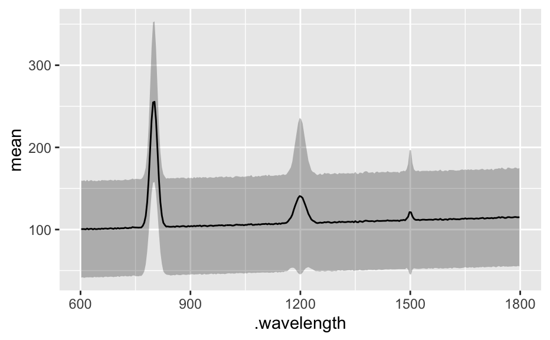

as.data.frame() returns x@data (as data.frame).
as.matrix() returns the spectra matrix x@data$spc as matrix.
as.wide.df() converts the spectra matrix to a data.frame. The extra
data together with this data is returned. The column names of the spectra
matrix are retained (if they are numbers, without preceding letters).
as.long.df() returns a long-format data.frame.
The data.frame returned by as.long.df() is guaranteed to have columns
spc and .wavelength. If nwl(x) == 0 these columns will be NA.
as.t.df() produces a 'transposed' data.frame with columns containing
the spectra.
# S3 method for hyperSpec
as.data.frame(x, row.names = TRUE, optional = NULL, ...)
# S3 method for hyperSpec
as.matrix(x, ...)
as.wide.df(x, wl.prefix = "")
as.long.df(x, rownames = FALSE, wl.factor = FALSE, na.rm = TRUE)
as.t.df(x)A hyperSpec object.
If TRUE, a column .row is created containing
row names or row indices if no rownames are set.
If character vector, the rownames are set accordingly.
(Ignored)
(Ignored)
Prefix to prepend wavelength column names.
Should the rownames be in column .rownames of the
long-format data.frame?
Should the wavelengths be returned as a factor (instead of numeric)?
If TRUE, rows where spc is not NA are deleted.
as.data.frame() returns x@data as data.frame;
as.matrix() returns x@data$spc (== x$spc == x[[]]) as matrix;
as.wide.df() returns a data.frame that consists of the extra data and
the spectra matrix converted to a data.frame. The spectra matrix is
expanded in place.
as.long.df() returns the stacked or molten version of x@data.
The wavelengths are in column .wavelength.
as.t.df() returns a data.frame similar to as.long.df, but each
spectrum in its own column. This is useful for exporting summary spectra,
see the example.
[[]] for a shortcut to as.matrix()
utils::stack() and reshape::melt() or reshape2::melt() for
other functions producing long-format data frames.
as.data.frame(faux_cell[1:3, , 600 ~ 620])
#> x y region spc.602 spc.606 spc.610 spc.614 spc.618 .row
#> 1 -11.55 -4.77 matrix 95 91 94 80 85 1
#> 2 -10.55 -4.77 matrix 167 140 177 148 174 2
#> 3 -9.55 -4.77 matrix 167 180 189 221 161 3
as.matrix(faux_cell[1:3, , 600 ~ 620])
#> 602 606 610 614 618
#> [1,] 95 91 94 80 85
#> [2,] 167 140 177 148 174
#> [3,] 167 180 189 221 161
lm(c ~ spc, data = flu[, , 450])
#>
#> Call:
#> lm(formula = c ~ spc, data = flu[, , 450])
#>
#> Coefficients:
#> (Intercept) spc
#> 0.0038493 0.0004407
#>
as.wide.df(faux_cell[1:5, , 600 ~ 610])
#> x y region 602 606 610
#> 1 -11.55 -4.77 matrix 95 91 94
#> 2 -10.55 -4.77 matrix 167 140 177
#> 3 -9.55 -4.77 matrix 167 180 189
#> 4 -8.55 -4.77 matrix 153 125 124
#> 5 -7.55 -4.77 matrix 12 14 16
summary(as.wide.df(faux_cell[1:5, , 600 ~ 610]))
#> x y region 602 606
#> Min. :-11.55 Min. :-4.77 cell :0 Min. : 12.0 Min. : 14
#> 1st Qu.:-10.55 1st Qu.:-4.77 matrix :5 1st Qu.: 95.0 1st Qu.: 91
#> Median : -9.55 Median :-4.77 nucleus:0 Median :153.0 Median :125
#> Mean : -9.55 Mean :-4.77 Mean :118.8 Mean :110
#> 3rd Qu.: -8.55 3rd Qu.:-4.77 3rd Qu.:167.0 3rd Qu.:140
#> Max. : -7.55 Max. :-4.77 Max. :167.0 Max. :180
#> 610
#> Min. : 16
#> 1st Qu.: 94
#> Median :124
#> Mean :120
#> 3rd Qu.:177
#> Max. :189
as.long.df(flu[, , 405 ~ 410])
#> .wavelength spc filename c
#> 1 405.0 27.15000 rawdata/flu1.txt 0.05
#> 2 405.0 66.80133 rawdata/flu2.txt 0.10
#> 3 405.0 93.14433 rawdata/flu3.txt 0.15
#> 4 405.0 130.66367 rawdata/flu4.txt 0.20
#> 5 405.0 167.26667 rawdata/flu5.txt 0.25
#> 6 405.0 198.43033 rawdata/flu6.txt 0.30
#> 1.1 405.5 32.34467 rawdata/flu1.txt 0.05
#> 2.1 405.5 63.71533 rawdata/flu2.txt 0.10
#> 3.1 405.5 103.06767 rawdata/flu3.txt 0.15
#> 4.1 405.5 139.99833 rawdata/flu4.txt 0.20
#> 5.1 405.5 171.89833 rawdata/flu5.txt 0.25
#> 6.1 405.5 209.45800 rawdata/flu6.txt 0.30
#> 1.2 406.0 33.37867 rawdata/flu1.txt 0.05
#> 2.2 406.0 66.71200 rawdata/flu2.txt 0.10
#> 3.2 406.0 106.19367 rawdata/flu3.txt 0.15
#> 4.2 406.0 143.79767 rawdata/flu4.txt 0.20
#> 5.2 406.0 177.47067 rawdata/flu5.txt 0.25
#> 6.2 406.0 215.78500 rawdata/flu6.txt 0.30
#> 1.3 406.5 34.41933 rawdata/flu1.txt 0.05
#> 2.3 406.5 69.58233 rawdata/flu2.txt 0.10
#> 3.3 406.5 110.18633 rawdata/flu3.txt 0.15
#> 4.3 406.5 148.42000 rawdata/flu4.txt 0.20
#> 5.3 406.5 184.62467 rawdata/flu5.txt 0.25
#> 6.3 406.5 224.58700 rawdata/flu6.txt 0.30
#> 1.4 407.0 36.53133 rawdata/flu1.txt 0.05
#> 2.4 407.0 72.52967 rawdata/flu2.txt 0.10
#> 3.4 407.0 113.24867 rawdata/flu3.txt 0.15
#> 4.4 407.0 152.13267 rawdata/flu4.txt 0.20
#> 5.4 407.0 189.75233 rawdata/flu5.txt 0.25
#> 6.4 407.0 232.52800 rawdata/flu6.txt 0.30
#> 1.5 407.5 37.64767 rawdata/flu1.txt 0.05
#> 2.5 407.5 74.55833 rawdata/flu2.txt 0.10
#> 3.5 407.5 119.17300 rawdata/flu3.txt 0.15
#> 4.5 407.5 159.31033 rawdata/flu4.txt 0.20
#> 5.5 407.5 198.11533 rawdata/flu5.txt 0.25
#> 6.5 407.5 240.77133 rawdata/flu6.txt 0.30
#> 1.6 408.0 38.13700 rawdata/flu1.txt 0.05
#> 2.6 408.0 77.04800 rawdata/flu2.txt 0.10
#> 3.6 408.0 121.31333 rawdata/flu3.txt 0.15
#> 4.6 408.0 165.05233 rawdata/flu4.txt 0.20
#> 5.6 408.0 205.56267 rawdata/flu5.txt 0.25
#> 6.6 408.0 248.04667 rawdata/flu6.txt 0.30
#> 1.7 408.5 39.17700 rawdata/flu1.txt 0.05
#> 2.7 408.5 80.25967 rawdata/flu2.txt 0.10
#> 3.7 408.5 124.67533 rawdata/flu3.txt 0.15
#> 4.7 408.5 168.68967 rawdata/flu4.txt 0.20
#> 5.7 408.5 208.41933 rawdata/flu5.txt 0.25
#> 6.7 408.5 256.89133 rawdata/flu6.txt 0.30
#> 1.8 409.0 40.73567 rawdata/flu1.txt 0.05
#> 2.8 409.0 82.53867 rawdata/flu2.txt 0.10
#> 3.8 409.0 129.56867 rawdata/flu3.txt 0.15
#> 4.8 409.0 175.45900 rawdata/flu4.txt 0.20
#> 5.8 409.0 217.55267 rawdata/flu5.txt 0.25
#> 6.8 409.0 262.73900 rawdata/flu6.txt 0.30
#> 1.9 409.5 41.38133 rawdata/flu1.txt 0.05
#> 2.9 409.5 84.49167 rawdata/flu2.txt 0.10
#> 3.9 409.5 134.11733 rawdata/flu3.txt 0.15
#> 4.9 409.5 181.58100 rawdata/flu4.txt 0.20
#> 5.9 409.5 224.74633 rawdata/flu5.txt 0.25
#> 6.9 409.5 270.27133 rawdata/flu6.txt 0.30
#> 1.10 410.0 44.25133 rawdata/flu1.txt 0.05
#> 2.10 410.0 88.15167 rawdata/flu2.txt 0.10
#> 3.10 410.0 139.98667 rawdata/flu3.txt 0.15
#> 4.10 410.0 185.69233 rawdata/flu4.txt 0.20
#> 5.10 410.0 231.03567 rawdata/flu5.txt 0.25
#> 6.10 410.0 281.82867 rawdata/flu6.txt 0.30
summary(as.long.df(flu[, , 405 ~ 410]))
#> .wavelength spc filename c
#> Min. :405.0 Min. : 27.15 Length:66 Min. :0.050
#> 1st Qu.:406.0 1st Qu.: 75.18 Class :character 1st Qu.:0.100
#> Median :407.5 Median :137.05 Mode :character Median :0.175
#> Mean :407.5 Mean :137.80 Mean :0.175
#> 3rd Qu.:409.0 3rd Qu.:196.02 3rd Qu.:0.250
#> Max. :410.0 Max. :281.83 Max. :0.300
summary(as.long.df(flu[, , 405 ~ 410], rownames = TRUE))
#> .rownames .wavelength spc filename c
#> 1:11 Min. :405.0 Min. : 27.15 Length:66 Min. :0.050
#> 2:11 1st Qu.:406.0 1st Qu.: 75.18 Class :character 1st Qu.:0.100
#> 3:11 Median :407.5 Median :137.05 Mode :character Median :0.175
#> 4:11 Mean :407.5 Mean :137.80 Mean :0.175
#> 5:11 3rd Qu.:409.0 3rd Qu.:196.02 3rd Qu.:0.250
#> 6:11 Max. :410.0 Max. :281.83 Max. :0.300
summary(as.long.df(flu[, , 405 ~ 410], wl.factor = TRUE))
#> .wavelength spc filename c
#> 405 : 6 Min. : 27.15 Length:66 Min. :0.050
#> 405.5 : 6 1st Qu.: 75.18 Class :character 1st Qu.:0.100
#> 406 : 6 Median :137.05 Mode :character Median :0.175
#> 406.5 : 6 Mean :137.80 Mean :0.175
#> 407 : 6 3rd Qu.:196.02 3rd Qu.:0.250
#> 407.5 : 6 Max. :281.83 Max. :0.300
#> (Other):30
df <- as.t.df(apply(faux_cell, 2, mean_pm_sd))
head(df)
#> .wavelength mean.minus.sd mean mean.plus.sd
#> spc.602 602 39.77466 98.99429 158.2139
#> spc.606 606 39.13649 99.35771 159.5789
#> spc.610 610 39.64621 99.13486 158.6235
#> spc.614 614 39.85076 99.55543 159.2601
#> spc.618 618 39.72213 99.14629 158.5704
#> spc.622 622 39.62738 99.08914 158.5509
if (require(ggplot2)) {
ggplot(df, aes(x = .wavelength)) +
geom_ribbon(aes(ymin = mean.minus.sd, ymax = mean.plus.sd),
fill = "#00000040"
) +
geom_line(aes(y = mean))
}
